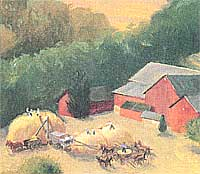
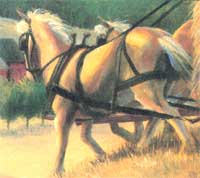
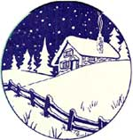

Harvest On Gideon's Farm
Day in the Life
By Eric Brende
December/January 1996
Life on an Amish threshing crew .
Picture yourself seated high atop a massive load of wheat straw on a wagon driven by a nine-year-old boy and pulled by two draft horses, muscles rippling and coats dark with sweat in the heat of a sultry June morning. The wagon, perched at the top of an escarpment dividing highlands from low on a cattle farm, is about to descend. Far below, you see freshly painted farm buildings and human figures and horses and mechanisms flickering in the collective endeavor of a wheat harvest.
A long eroded gully that is supposed to pass for a farmer's lane stretches in front of you, winding its way down the hillside until it appears to make a sharp right turn at a barbed wire fence. The declivity is so steep and the surface so curvy and pitted, it seems better suited as a slalom ski run than a passageway for a rickety straw wagon.
You are seeing, through my eyes, my first morning of threshing on Gideon Stoltzfus's farm, where I had threshed before for two seasons before taking a year's sabbatical.
Swoosh! I grab onto my hat as I feel the supports falling out from under me. The boy, Mervin, is yelling, "You can't stop 'em when we get down there so you jus' have to let 'em go!" I am vaguely aware of large objects-fence posts-going "boing" as they alternately enlarge and recede in my vision. As momentum builds, the galloping horses seem to be tumbling: 3,000 pounds of bone, muscle, sinew, and hoof in avalanche. The straw is about as solid as air, and levitates disconcertingly with each bounce. I am flowing down the hill with it.
I see the barbed wire getting close and shut my eyes. I feel myself lurching leftward as the wagon rounds the right turn, and I seem to hang out over the edge dangerously-then settle in place again. My eyes open as we land in an open field across from the barnyard. Mervin's hat flies up on the last ascent, and he catches it with one hand without losing hold of the reins. Spitting straw out of my mouth, I slither down the steep pile (still mostly in place, miraculously) and stride over to a half-full wagon where the crew is reassembling for another load, led by two fresh horses. Shocks of grain, jagged and glinting, surround me. I grab my pitchfork and am about to say something when, once again, Elbert cuts me off.
"What, you use insecticide on your potato bugs? Why I jus' let the neighbor's guinea birds take care of mine. Whomp, whomp, whomp." He lifts up his nose and chomps like a guinea sucking down a potato bug, his long beard flapping.
"Good year for insects, with all the rain," comes the voice of an invisible thresherman concealed behind the ever-rising mound of sheaves we are creating.
"Yeah," adds Gideon with a groan, as he thrusts a sheaf high on the pile. "Last year it didn't rain and nothing grew. This year it rained and nothing grew. Guess what I got from my blackberries the last two weeks? A big fat zero."
But then his eyes tilt mischievously. "The weather;" he continues, "It always seems good for something. (Grunt) This year, it's strawberries. The children, they're getting a little tired of them now. Wish the truck folks would take 'em off my hands. They don't want our King Crimsons. They want this other stuff. Ours is perishable. Theirs has"-the face brightens- "shelflife." He can see us grinning and knows he now has center stage. Gideon has a large fascinating nose, wending and bending like a cornucopia. He turns his head one way and tilts his eyes the other, smiling demurely as he chatters.
"Now, you take watermelons;" he blows on. "I like 'em with the skin this thick." He pinches his fingers together. "But they won't take'em. They want something with skin an inch thick that they can throw around. We pick fruit that day and have it for supper. They pick one day, pack it the next." Everyone is laughing. "They pick it green, ship it the next day, and sell it who knows when.... We really live like kings."
"It never occurs to people in the city," I observe, "how well they'd eat if they lived in the country."
"But they wouldn't want to do what they'd need in exchange." Adds the invisible voice: "They don't want to have to work" An audible grunt follows from behind the mound and a wheat bundle rolls into place on top of the stack, nearly completing it.
Gil (the unseen one) does have a point. It might be misleading to depict harvesttime threshing as all merry conversation, all exultation in the glories of country living contrasted with the bleakness of the city. There is some physical exertion involved here. But it is important to understand a qualification. How is it possible, now that we're exerting ourselves so hard (Did anyone notice?), to talk about the work so mirthfully at the same time? In some inscrutable fashion, skills over time become unthinking, automatic-or, dare I say, automated? For example: the handy-dandy beating heart, the fully warrantied swelling lung, the peerless millions of muscle fibers meshing together like living cloth. To these we add the strolling leg and the flinging forearm. But whatever the cause, the mind is freed up for higher engagements.
But the gaining of new habits is not itself automatic. Perhaps it would be useful to recount my first exposure to threshing eight years ago. This at the least will reveal a little of how it works.
It may also suggest why there is truth to Gil's claim.
It was 9:00 A.M., on June 21, 1988, my first day working as an Amish threshing hand. I disembarked from an Amish farmer's buggy and beheld the farm of Alvin Stoltzfus (Gideon's brother), a stark wood-frame house and a tall metal-sided barn with a silo attached. Some geese and pigs clustered in a shady area at the edge of a pond. Beyond the buildings I could see more trees and, off to the other side, a large bare field of yellow stubble-apparently evidence of work already completed.
It was unusually hot that day-already about 90°-and I saw bearded men everywhere in the barnyard mopping their brows, lifting their straw hats, and swabbing their hair. Horses dark with perspiration looked restive in the oppressive, still air. One group of men was tending to the horses in the shade beside the barn. Two other men stood on a wagon mounded high with sheaves of wheat and forked them over to a conveyor belt that fed the threshing machine-a huge gray metal-and-wood contraption quaking like an elephant with palsy and sucking sheaves up to its steel lips with a long retracting trunk. The machine itself was powered by more horses, which rotated in four pairs around a hub in the barnyard connected to the device by means of a 50-foot flopping black rubber belt. These horses, especially, looked physically spent and their coats foamed with sweat. A boy stood in the center of the hub in a kind of pulpit and poked them with a long stick whenever they fell back or lost their footing.
In spite of its clear effects, I was oblivious to the heat. (The heat itself had probably numbed my brain.) To me the scene appeared as exotic as a three-ring circus. I could hardly take it in. But soon I found myself alongside five full-bearded Amish men moving toward the fields on a tipsy horse-drawn wagon driven by a 12-year-old boy. I sat cross-legged with my arms braced against the bed to stabilize myself, while several of the men stood erect and evened out the rolls with their legs like surfers.
Then we arrived at the unshocked field. Beautiful heaps, these shocks composed of eight or ten sheaves clustered vertically in little golden huts with a couple of sheaves turned sideways on top to form the roofs-miniature Athenian temples-came upon me from all sides! The shocks were so beautiful, I almost hated to disassemble them. But this was the task before us. The wagon stopped.
Somberly and silently, the men spilled to the ground and began thrusting their forks and ripping this handiwork apart. The shocks dissociated into sheaves, bundles of wheat stalks each tied, like a large broom head, with a piece of twine around the center.
(This tying, I later learned, had not been done manually but was performed using a horse-drawn wheat-mowing contraption called a binder.) With a deft flick, the men would catch two or three sheaves on the tines of the pitchfork and scoop them up and over the side of the wagon. A couple of the men nodded to me as if to cue me in.
I tried to imitate their motions and found, to my satisfaction, that I could. I began with one sheaf at a time, then attempted two or sometimes three. The sheaves weren't really that heavy. The main trick was to catch them by the string, or they would fall back to the ground. Occasionally I did lose one, but I felt I could be forgiven on my first day as a thresherman. One man stood on the wagon and scampered to pick up the sheaves, arranging them like bricks that interlocked to form an ever taller, wobblier heap. As the mound rose, so did he, until eventually I could only catch glimpses of him over the edge of a wheat cliff.
As the wagon load got taller, I noticed something else. The sheaves were not as easy to lift now. Not only did they feel heavier (was I tiring?), it took greater and greater effort to raise them this great height over the top of the heap. And more were falling back to the ground. (None of the other men let this happen, and it became a little embarrassing.) The wagon tended to move ahead of me before I was done collecting all my dropped sheaves.
The size of the heap on the wagon seemed tremendous, yet the men kept adding to it, piling the sheaves as if they would never tire, mopping their brows and remarking on the unusual warmth or remaining stoically silent. My mind became clouded by an ominous feverish feeling. But still I tried to keep pace. At last someone muttered, "Call it a load."
The wagon turned back to the barn, but as it did another one arrived immediately in its place. Wonderful glowing Athenian temples greeted me on all sides again. We'd only removed two rows in a field of fifteen! This time, instead of responding with fluttering heartbeats of anticipation, I sneezed. The air was full of microscopic wheat fragments, swelling my sinuses.
The next round went somewhat differently from the first. Spasmodically sneezing and stumbling and stabbing, I entered what seemed a feverish dream in which I watched helplessly as someone in my clothing weakly pantomimed the motions of the laborers around him. Feverish aches and dullness alternated with chills and bodily shakes. The last words I remember hearing were: "When you start to get chills, you know it's time to stop."
I almost had to be carried from the field, and I spent two days bedridden with heatstroke. The lesson I learned was: when easing yourself into the simple life, don't begin on the hottest day of the year. And don't take on the most strenuous task.
But that was a brief setback, and once I had recovered I was amazed at how quickly my body and mind rose to new demands. Still, you may readily appreciate why the majority of triers give up at this point and why agrarian hand labors have a reputation among the gentry as brutish. Before becoming part of you, the skills must first be imprinted, the stamina beaten in. Even at that, farm labors are often justly conceived as dull. The labors themselves are, after all, metabolic. But this is the very opportunity of them. Like digestion or perspiration, they eventually hum on their own and make way for more important matters. And they do save a trip to the gym. Is this not the very essence of convenience we seek?
Now, eight years later, the voice from behind the wagon says: "Gettin' too tired yet, on your first day back?"
"No, not at all! I'm a little better than I was the first time I came here. Not making the mistake of taking three jabs each time instead of one." (I don't tell him that I've been working out with weights over the last year to get ready for this.) I feel a pleasant ache in my thighs, back, and shoulders. It is as if my muscles have their own taste receptors, now being gratified anew by work.
"Yeah, we remember," guffaws Gideon. "Your face was so red, we didn't know what to think about it."
Soon, back at the barn, his father Levi-the bishop-happens to notice me. "With your light complexion, is the sun beating too hard on you?"
"No, I'm all covered up by this hat. The only thing sunburned is maybe the back of my neck"-the one casualty this time.
Once in the fields again, Gideon resumes, "Do you think you'll sleep well so tired, or maybe all the aches and pains will keep you awake?"
"If I feel tired," I say with a chuckle, "it will be tomorrow morning when I try to get out of bed."
"No, I don't have a problem with that," says Gideon. "But I do feel tired at the end of the day. One time, well, we were building a roof shaped like this." I turn around to see his hands folded into an A. "And I had to hang from a rope like this." He bends his body into a right angle. "All day long in one position. Boy was I sore the next morning. Then I finally got to know what it must be like to be an old man."
A breeze wafts by and I break out into goose pimples all over. As it subsides, the depth of clover growing among the dead wheat stems seems to breathe humidity on me, and heaviness envelops my brain (now a pleasant drowsiness, not the morbidity of the first day). As sweat begins to ooze from all my pores, I melt into the landscape, melt into the soothing narratives. I am vaguely aware of a multiplicity of insects, little green flitty things, grasshoppers, whizzing beetles, and dragonflies, bouncing crazily around me from the verdant trampoline, occasionally landing on me as if to draw from the energy of my dependably pulsing physique. And so the morning's entertainment is played out-until the clang of the noontime bell.
Besides conversation and companionship, one of the other benefits of self-propelling manual labor is hunger. If our bodies are slick machines, they have to be refueled. But instead of that awful-smelling gasoline, we get to load up on some of the most mouthwatering homemade morsels. Only with a truly ravenous appetite are food and drink truly satisfying. And doubly so at a threshing, because the women go out of their way to make a tasty meal. And double that again when you're among the Amish, who specialize in zesty cooking.
Today, sloshing cool water on my face, bringing a soft clean towel against my forehead, I can only imagine what's in store. Following the man in front of me, I leave the porch and enter the dining area of Gideon's house, where a long table groans with meats, casseroles, fresh vegetables, salads, and homemade rolls, dessert waiting around the corner in the pantry.
Harvey begins to recount how a customer that morning insisted on "eggs from a hen. The last time he bought some, they (munch) came from a carton!" The room rocks with laughter.
"I heard a news item," says someone to my left, "that they want to make it illegal (munch) to eat eggs in some places."
Everyone choruses: "EGGS?"
"Too much klestrol. They said (munch) the average American doesn't get enough exercise to burn it off. They're announcing legislation (munch) somehair about this."
"They ought to make it illegal to not get exercise."
"I bet a lot more people die (munch) from that tubacka every year. I'd like to see the status ticks on that."
"What if everyone was just given enough ground (munch) to grow their own food on? Then (munch) these lazy people would have to work!"
(Pshaw!) "It won't (munch) happen."
As conversation winds its way around the table, before I know it I am swallowing the last couple bits of food-and I almost didn't taste a thing.
That automation of functions can cut both ways.
ALMANAC
DECEMBER 1996
1 First Sunday in Advent.
3 LAST QUARTER MOON, 12:07 A.M. EST; moon near Mars this morning.
4 Saturn halts retrograde motion, begins to move slowly eastward against the background stars.
5 Comet Hale-Bopp crosses north over the celestial equator.
7 Pearl Harbor Day; earliest sunset (4:35 P.m.) at 40° N.
8 Very dose conjunction of moon and Venus low in southeast in early dawn (around 6 A.M., but keep looking; can you still see the moots and Venus with binoculars or naked eye even after sunrise?).
10 NEW MOON, 11:58 A.M. EST; Wyoming Day.
12 Geminid meteors at their most numerous tonight and tomorrow night (viewers with dear weather at locations far from city lights may see dozens of shooting stars per hour flying out of the east in the evening, out of the south from midnight to 4 A.M., out of the southwest in the final hours before dawn); slim crescent moon to upper right of Jupiter (and very far to the left of Comet Hale-Bopp), low in the southwest at nightfall.
13 Friday the 13th (the second in 1996-the first occurred back in September); St. Lucy's Day (which poet John Donne called "the midnight of the year"; traditionally thought to be the shortest day of the year, when Catholic societies have celebrated the return of light-Lucy means "light").
14 The Halcyon Days begin (the Halcyon Days were supposed to be a period of tranquil weather in the Mediterranean, brought about by a mythical bird called the halcyon so that it could nest on the sea).
15 Bill of Rights Day; South Pole first reached oil this day in 1912, near the time of summer solstice in Antarctica.
17 FIRST QUARTER MOON, 4:31 A.M. EST; sun enters constellation Sagittarius.
19 Saturnalia (ancient Roman solstice festival) begins.
21 Winter solstice, 9:06 A.M EST-on this day the sun is farthest south, passes lowest across the south sky as seen from the Northern Hemisphere; Sun enters Capricornus (at the time of solstice).
22 Jupiter and Mercury, quite low in the southwest about 30-45 minutes after sunset, are at their closest in the sky, less than 3° apart (find Jupiter, then look for dimmer Mercury about two widths of your finger at arm's length to the lower right of Jupiter). Binoculars till help, and they may also show you, equally low in the west, a last evening sight of Comet HaleBopp before it starts being more visible before dawn for several months.
24 Christmas Eve; DULL MOON, 3:41 P.M. EST (Santa trill have a full lunar orb to guide his way tonight).
25 Christmas.
26 Boxing Day in Canada; Saturnalia ends.
28 The Halcyon Days end.
30 The darkest lunar eclipse in at least 50 years occurred this day in 1963-with another almost as dark on this date in 1982.
31 New Year's Eve.
JANUARY 1997
1 New Year's Day; LAST QUARTER MOON (first of two this month), 8:46 P.M. EST; Japanese New fear (year 2655 begins); Earth at perihelion (closest to sun in space-98.3 percent of average distance-but the Northern Hemisphere is tilted away from sun, so weather is cold), 6 P.M. EST.
2 Mercury at inferior conjunction with the still (hence unviewable)
3 Look for Quadrantid meteors before dawn this morning and nest; Comet Hale-Bopp is technically due north of the sun this day-but it is so far north of the sun that it just might be glimpsed, one hour before sum rise, in the east, about one fist-width above the horizon (see Seasons column, page 82.
5 Twelfth Night; latest sunrise (7:22 A.M.) at 40° N.
6 Eastern Orthodox Christmas; Epiphany (supposed date of the Magi's visit to (Christ) 7 Venus fairly near the moon this morning, very low in the east-southeast an hour before dawn (look for Comet Hale-Bopp well to the left, in the east); temperature hit-40° F. in Hawley, Arizona, this day in 1971.
8 NEW MOON, 11:27 P.M. EST
9 Jupiter less than 1° from Neptune, with Jupiter 10,000 times brighter, but both planets too close to our line of sight with the sun to be seen.
10 First day of Ramadan, the Muslim month of fasting; on this day in 1962, a single cast high-pressure system stretched all the way from the Yukon to Florida, with all 48 contiguous states underneath it.
12 Mercury and Venus less than 3° apart, but too low in the east-southeast before sunrise to see properly.
13 Moon near Saturn this evening; Venus at its farthest south in the heavens.
15 FIRST QUARTER MOON, 3:03 um. ESL.
17 Neptune at conjunction with the sun, thus unviewable; in 1959, 51 inches of snow fell in 16 hours in Bennett's Bridge, New York; Philadelphia had a high temperature of 0° F. this day in 1982.
18 Mars 1 a.u. (astronomical unit) from the Earth (an astronomical unit is the average distance from Earth to sun, about 93 million miles)-and closing.
19 Moon near the star Aldebaran; Jupiter in conjunction with the sun, thus unviewable; sun enters Capricomus.
20 Martin Luther King, Jr's Birthday (observed); St. Agnes's Eve; January Thaw (a spell of milder weather) may occur between now and January 26; halfway point in winter fuel consumption; sun enters Aquarius.
22 Queen Victoria died this day in 1901.
23 FULL. MOON, 10:12 A.M. EST; the temperature in Iroquois Falls, Ontario, hit-73° F. this day in 1935.
24 Mercury at greatest elongation in the dawn sky (but not very high); Venus at conjunction with the sun, and unviewable.
25 St. Paul's Day.
28 Moon near Mars tonight; 29 people died in Buffalo blizzard in 1977 (snowdrifts to 25 feet high).
29 Mars at aphelion (farthest from sun in space-1.666 a.u.).
81 LAST QUARTER MOON (second in the month), 2:41 P.M. EST.
 ILLUSTRATIONS: AARON F. ST. JOHN |
 |
 |
|
 |
|
|